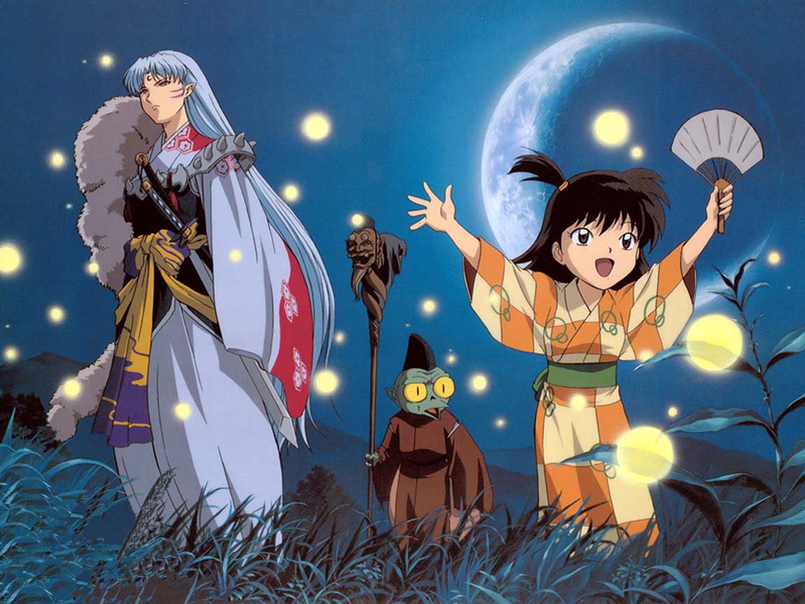

atras
IMAGENES EN GENERAL
 |
 | |
|
|
 |
||||
|
|
|
¿ESTO ES MAS QUE SOLO DIBUJOS ES UN ARTE?
manzano_55@hotmail.com
manzano_55@hotmail.com
| La historia del anime, el género de animación de origen japonés, comienza en la segunda dKitayama en 1917.En 1906 aparece la primera película de animación, Humorous Phases of funny face, del productor americano James Stuart Blackton. En 1907 se hizo la primera producción de animación japonesa, en donde sale un niño marinero.1 En 1908 aparece en Francia Fantasmagorie, del dibujanteEmile Cohl y producida por Gaumont. Este tipo de películas de animación llegan a los cines japoneses hacia 1910. Entre 1914 y 1917se exhibieron unas 93 películas de animación extranjeras, siendo las americanas las de mayor popularidad. Ante tal fenómeno, los productores japoneses comenzaron a plantearse la realización de cine de animación nacional. La compañía Tennenshoku Katsudo Shashin (Tenkatsu) es quien reacciona primero, encargando en 1916 al dibujante de manga Oten Shimokawa una película del género. En aquella época no existía documentación en Japón sobre las técnicas de animación, por lo que la tarea de Shimokawa no fue fácil. No obstante, consiguió realizar el primer filme de animación japonesa, Imokawa Mukuzo, Genkanban no maki (Mukuzo Imokawa y el guardián de la entrada) estrenada en enero de 1917. Por su parte, el pintor de estilo occidental Seitaro Kitayama, interesado por las películas extranjeras de animación que veía, presenta un proyecto de realización propia a la compañía Nippon Katsudo Shashin (Nikkatsu), que ésta acepta encargarle. Kitayama tampoco era un experto en la animación, pero a base de pruebas y errores, consiguió terminar Saru Kani gassen (La batalla del mono y el cangrejo), basada en un cuentopopular japonés, que fue estrenada en mayo de 1917. | La historia del cine de animación japonés comienza efectivamente en 1917 gracias a los trabajos de estos tres pioneros, pero no se conserva copia de ninguna de estas películas por lo que se desconocen otros datos. La de Kouchi fue la más elogiada de ellas por las críticas de la época, siendo además la primera en rodarse, aunque se estrenara después de las otras dos.Shimokawa llegó a realizar cinco películas de animación, pero debido a la sobreexposición al reflejo luminoso que conllevaba el proceso, sus ojos experimentaban gran cansancio, por lo que decidió abandonar este trabajo y volver a dibujar manga. Kouchi también se apartó del cine de animación tras realizar cuatro películas, pero luego volvería temporalmente a este campo debido a que personalidades de la esfera política le encargaron cortos de propaganda. Por el contrario, Kitayama, se dedicó plenamente a la realización de películas de animación. Comenzó empleando como ayudantes a jóvenes aspirantes a pintores, a los que enseñaba las técnicas del dibujo animado. Kitayama, que en 1917 llegó a realizar hasta diez películas, presenta ese mismo año una película basada en el personaje infantil Momotarō, que consigue exportar a Francia, convirtiéndose en el primer producto de animación japonesa que llega a occidente. Kitayama crea sus propios estudios de cine en 1921 pero el Gran terremoto de Kantō de 1923 destruirá sus instalaciones de Tokio, por lo que decide mudarse a Osaka. Allí se aparta de los dibujos animados para dedicarse a rodar documentales informativos para una empresa de noticias local. No obstante, la gran importancia de la labor de Kitayama residirá en haber enseñado las técnicas de la animación a una serie de jóvenes que proseguirán el trabajo que él empezó. |
NARUTO ES UN ANIME QUE ME GUSTA MUCHO EN EL CUAL PODEMOS ENCONTRAR GRAN DIVERSIDAD DE CARACTERISTICAS DE NINJAS Y DE GRANDES CUALIDADES AQUI LES DEJO UNAS INAGENES
EN LACESPAGINAS E-mail:manzano_55@hotmail.com FACEBOOk:ALAN TORRES MANZANO HISTORIAANIME QUE ES EL ANIME |